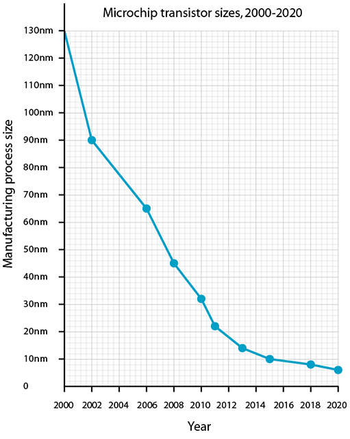

What is a CPU?
Short for Central Processing Unit, it’s the chip that executes instructions and
moves data around in every major device you own, from the smallest tablet to
the mightiest of desktop computers.
What makes a CPU a CPU?
The CPU is the core component of what defines a computing device, but it isn’t the sole component, it just does most of the heavy lifting.
It’s a chip that sits in a special seat (socket) located on the main circuit board (motherboard or mainboard) inside the device.
It’s distinctly separate from the memory, which is where it temporarily stores information.
It’s also separate from the graphics card or graphics chip, which renders all video and 3D graphics displayed on your screen.
CPUs are built by placing billions of microscopic transistors onto a single computer chip. Those transistors allow it to make the calculations it needs to run programs that are stored on your system’s memory.
They’re effectively minute gates that switch on or off, thereby conveying the ones or zeros that translate into everything you do with the device, be it watching videos, or writing an email.
One of the most common advancements of CPU technology is in making those transistors smaller and smaller. That’s resulted in the improvement to CPU speed over the decades, often referred to as Moore’s Law.
Although Moore's Law isn't as accurate today as it used to be, the size of transistors on CPU's is still going down. The latest offerings from Advanced Micro Devices (AMD, a CPU manufacturer) has 7 nano-meter transistors
on their latest CPU chips.
What does a CPU actually do?
At its core, a CPU takes instructions from a program or application and performs a calculation. This process breaks down into three key stages: Fetch, decode, and execute. A CPU fetches the instruction from RAM, decodes what the instruction actually is, and then executes the instruction using relevant parts of the CPU.
The executed instruction, or calculation, can involve basic arithmetic, comparing certain numbers together, or moving them around in memory. Since everything in a computing device is represented by numbers, those simple tasks equate to what a CPU does. It’s what facilitates everything from starting up Windows (or Linux), to watching a YouTube video.
In modern systems, the CPU doesn’t do everything, but it still must feed to specialized hardware the numbers they need to function. It needs to tell the graphics card to show an explosion because you clicked on a fuel barrel (whoops), or tell your hard drive to transfer an Office document to the system’s RAM for quicker access.
This is a graph of the size of transistors on microchips over the past 20 years.
How to install an Intel CPU: